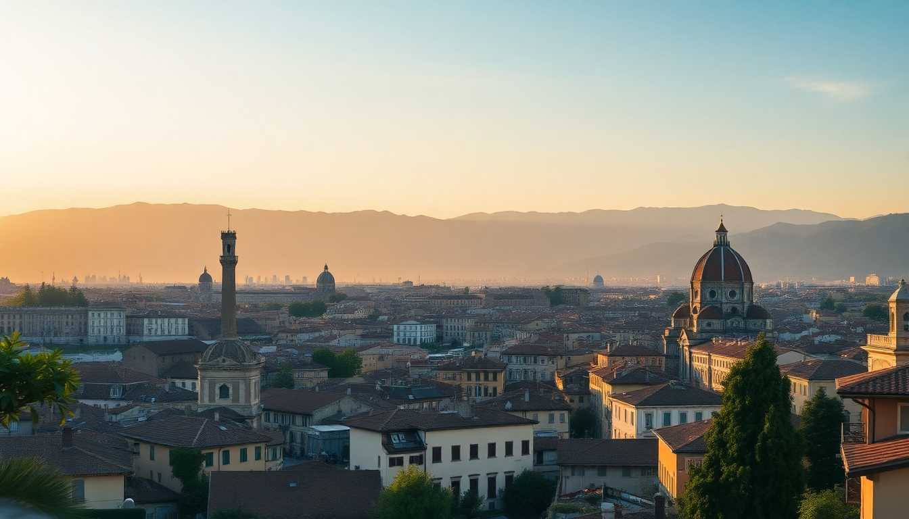

Where to Stay in Florence: Best Neighborhoods for Every Budget

I’ve been to Florence four times now, and each trip taught me something different about where to lay your head. The first time, I booked a room near the Duomo because I thought that’s what you’re supposed to do. It was loud, touristy, and my sleep was wrecked by 6 AM church bells. The second time, I stayed across the river in Oltrarno and actually felt like a local. Here’s what I’ve learned: the right neighborhood can make or break your Florence trip. This guide breaks down each area by budget, vibe, and practical reality—so you can pick the spot that fits your trip, not someone else’s Instagram feed.
What’s the best neighborhood for first-time visitors on a mid-range budget?
If you want to be close to the big sights but not drowning in crowds, I’d point you to Santa Maria Novella. It’s the area around the main train station, which sounds unglamorous, but it’s actually a sweet spot. You’re a 10-minute walk from the Duomo, the Mercato Centrale is right there for food, and the streets are wide enough that you don’t feel like you’re swimming in a human river.
- Hotel Bernini Palace — a solid 4-star near Piazza della Signoria, but book early or you’ll pay double
- Hotel Davanzati — family-run, with a rooftop terrace that’s perfect for evening wine
- Mercato Centrale — grab a quick lunch on the ground floor (fresh pasta) or the upstairs food hall (craft beer and truffle panini)
- Santa Maria Novella Basilica — quieter than the Duomo, and the facade is actually more interesting
I stayed at Hotel Davanzati on my second trip and the staff remembered my name by day two. The rooms are small (that’s Florence), but the breakfast spread—fresh pastries, local meats, and proper cappuccino—made up for it. Budget tip: skip the hotel breakfast if you’re on a tighter budget and walk to Caffè Gilli in Piazza della Repubblica instead. It’s pricier, but the people-watching is free.
Where should budget travelers stay without sacrificing location?
Budget in Florence doesn’t have to mean a hostel bunk 40 minutes from the center. The San Lorenzo neighborhood, just north of the Duomo, is your best bet. It’s gritty in a good way—leather markets, student crowds, and cheap trattorias where the locals eat. You’ll trade a bit of polish for a lot of value.
- Plus Florence — a hostel with a pool (yes, a pool) and private rooms that cost less than a double in a hotel
- Hotel Maxim — basic but clean, two blocks from San Lorenzo Market
- Trattoria Mario — no reservations, cash only, and the best €12 plate of ribollita I’ve ever had
- San Lorenzo Market — the indoor section has cheaper souvenirs than the stalls outside
The downside? It’s loud. My room at Hotel Maxim faced the street, and the scooters start buzzing around 7 AM. Pack earplugs. The upside is that you’re a five-minute walk from Galleria dell’Accademia (David’s home), so you can beat the queue by going right at opening. I did that and had the statue almost to myself for ten minutes. Worth the early wake-up.
Is the Oltrarno neighborhood worth the hype for a more authentic stay?
Yes, but only if you’re okay with walking. The Oltrarno (literally “other side of the Arno”) is Florence’s bohemian heart—workshops, artisan studios, and fewer chain stores. It’s where I stayed on my last trip and I’d do it again in a heartbeat. You trade immediate proximity to the Duomo for real neighborhood life.
- Palazzo Guadagni — a historic hotel with a loggia terrace overlooking the square; the rooms are dated but the vibe is pure old Florence
- Hotel La Scaletta — budget-friendly, with a rooftop bar that has the best view of the Boboli Gardens
- Gelateria La Carraia — the best gelato in Florence, fight me on it; try the ricotta and fig
- Santo Spirito Basilica — Brunelleschi’s other church, and the piazza out front is perfect for an evening Aperol
The walk to the Duomo is about 20 minutes across the Ponte Vecchio, which is packed with tourists but still beautiful at sunrise. I’d recommend staying on the Oltrarno side of the river if you’re visiting for more than two nights. The restaurants here are cheaper and less touristy—Osteria Santo Spirito does a €15 fixed lunch that includes a pasta primo, a meat secondo, and a glass of wine. I ate there three times.
What’s the luxury neighborhood in Florence, and is it worth the price?
The Duomo area itself is the luxury zone, but I’d argue it’s not the best value. You’re paying for the view of the cathedral dome, and that’s about it. The streets are packed, restaurants are overpriced, and the hotel markup is real. If you want to splurge, go for the Santa Croce neighborhood instead—it’s elegant, quieter, and still central.
- Hotel Brunelleschi — a 4-star near the Duomo with a Roman bath in the basement; rooms start around €300
- Palazzo Vecchietti — boutique suites in a 16th-century palace; the breakfast is served in your room
- Enoteca Pinchiorri — three Michelin stars, but you’ll drop €200+ per person; save it for a special occasion
- Santa Croce Basilica — tombs of Michelangelo and Galileo, plus a leather school in the cloister
I had a drink at the Hotel Brunelleschi’s rooftop bar once—€18 for a Negroni—and watched the sunset over the Duomo. It was a beautiful view, but I didn’t feel like I missed out by not sleeping there. For my money, I’d rather stay in Santa Croce at Palazzo Vecchietti and walk the five extra minutes to the Duomo. The neighborhood has better restaurants and fewer selfie sticks.
Which neighborhood is best for families or groups?
If you’re traveling with kids or a group, the Cascine Park area near the river is a smart choice. It’s not the historic center, but it’s a 15-minute walk to the Duomo and you get more space for your money. The park itself is great for letting kids run around, and there’s a small amusement park on weekends.
- Hotel Villa Pitiana — a bit farther out but has a pool and garden; good for decompressing after museum days
- B&B Florence Pitti — family-run, with apartments that have kitchenettes
- Parco delle Cascine — rent bikes or just picnic; Tuesdays there’s a big market
- Trattoria da Burde — old-school Florentine, a short taxi ride from center; the bistecca alla fiorentina is the real deal
I don’t have kids, but I met a couple from Melbourne at B&B Florence Pitti who were traveling with two teenagers. They said the kitchenette saved them a fortune on meals, and the owner gave them a map with all the free kid-friendly spots—like the Leonardo da Vinci Interactive Museum near Piazza del Duomo. Worth noting if you’re trying to stretch a budget.
FAQ
Is it better to stay near the train station or the Duomo? Near the train station (Santa Maria Novella) is better for logistics and value. You’re a short walk from everything, but the noise level is lower than the Duomo area, and hotels tend to be cheaper. The Duomo area is convenient for sightseeing but crowded and overpriced. I’d take Santa Maria Novella over the Duomo zone any day.
Can you stay in Florence without a car? Absolutely. Florence is a walking city. The historic center is compact—you can cross it in 30 minutes on foot. The train station connects you to Rome, Venice, and the Tuscan countryside via Trenitalia high-speed trains. I’ve never needed a car in Florence, and parking in the center is a nightmare anyway. Skip the rental and use the train for day trips.
What’s the best area for nightlife? The Oltrarno, specifically around Piazza Santo Spirito and Via dei Benci. That’s where the locals drink. You’ll find small wine bars (enotecas) and casual pubs, not clubs. For a proper evening, start with an aperitivo at Le Volpi e l’Uva on Via dei Benci—they pair wines with small plates—then wander over to Joshua Blues Pub if you want live music. The Duomo area is dead after 10 PM.
Conclusion
- Budget travelers should book San Lorenzo—cheap eats, basic hotels, and walking distance to everything.
- Mid-range visitors get the best value in Santa Maria Novella—quiet, central, and connected by train.
- Authentic seekers (and nightlife fans) should cross the river to Oltrarno—real neighborhood life, better food, and fewer crowds.
- Luxury splurgers are better off in Santa Croce than the Duomo zone—more space, better restaurants, and still elegant.
- Families should look at Cascine Park or book a B&B with a kitchenette to save on meals and give kids room to breathe.